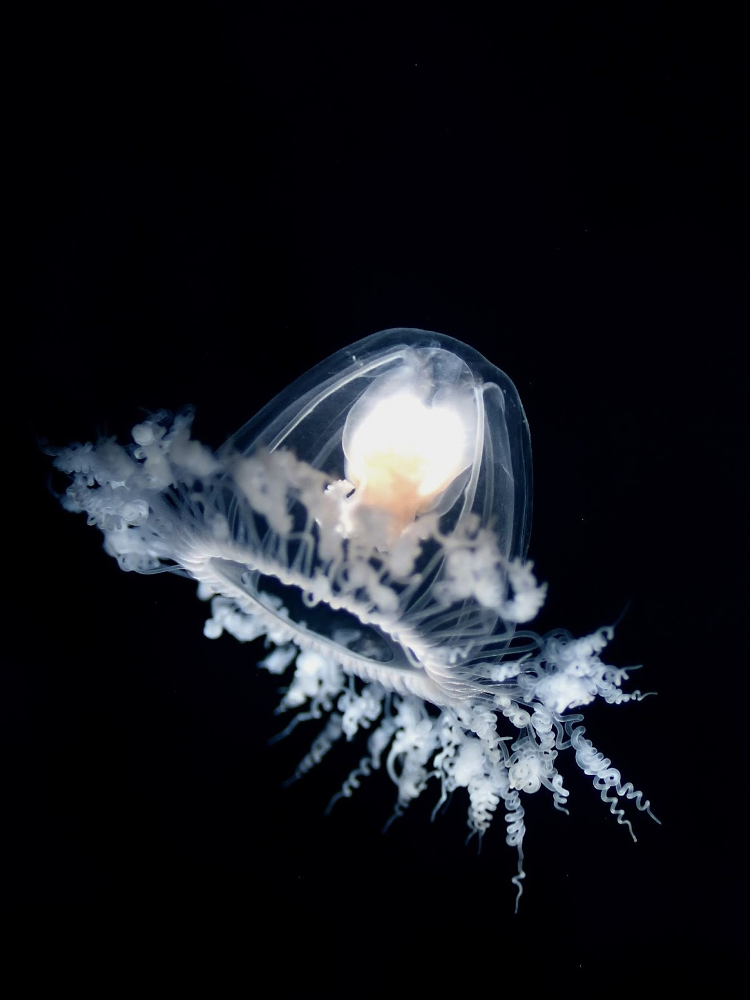
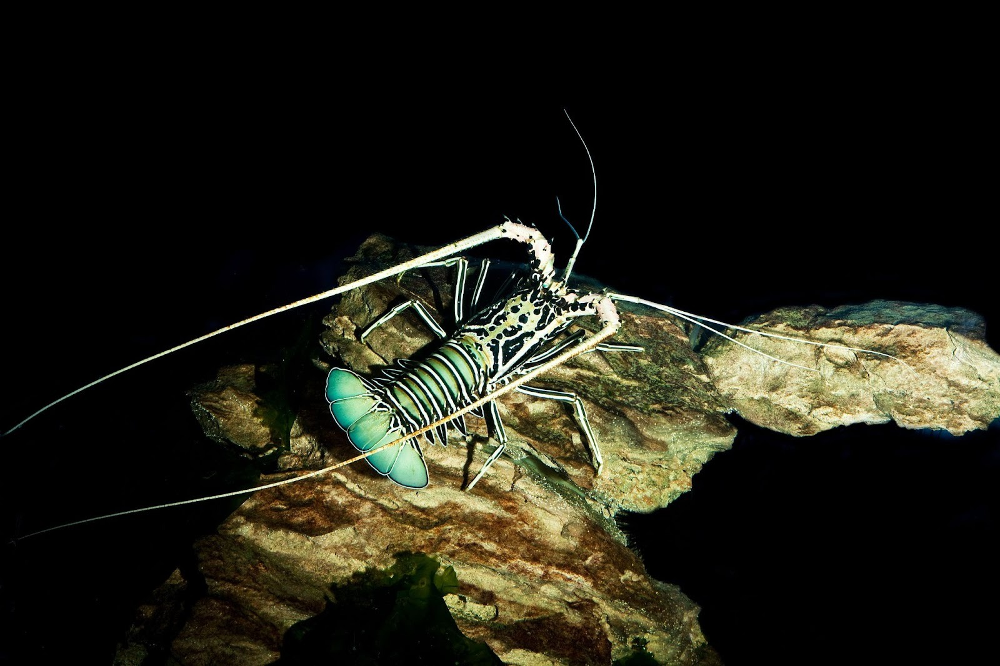
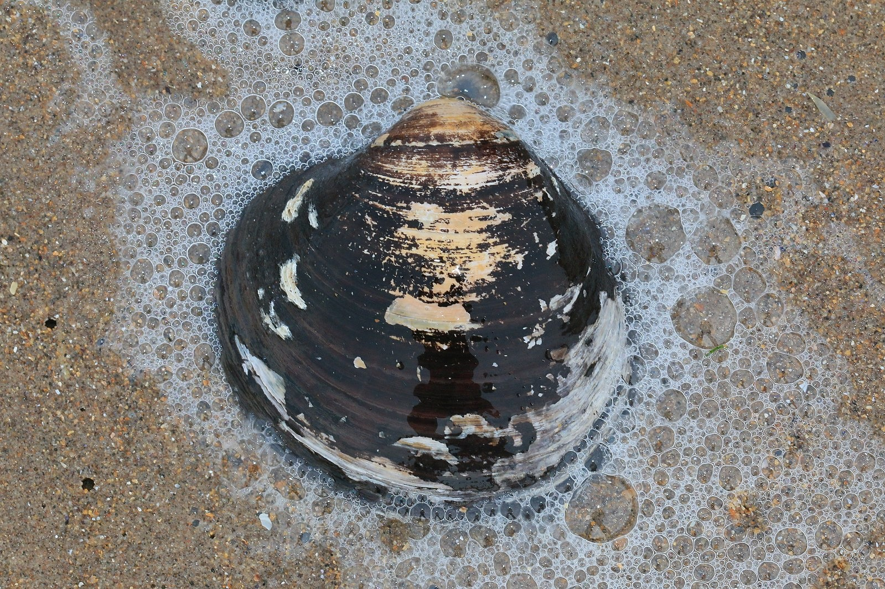
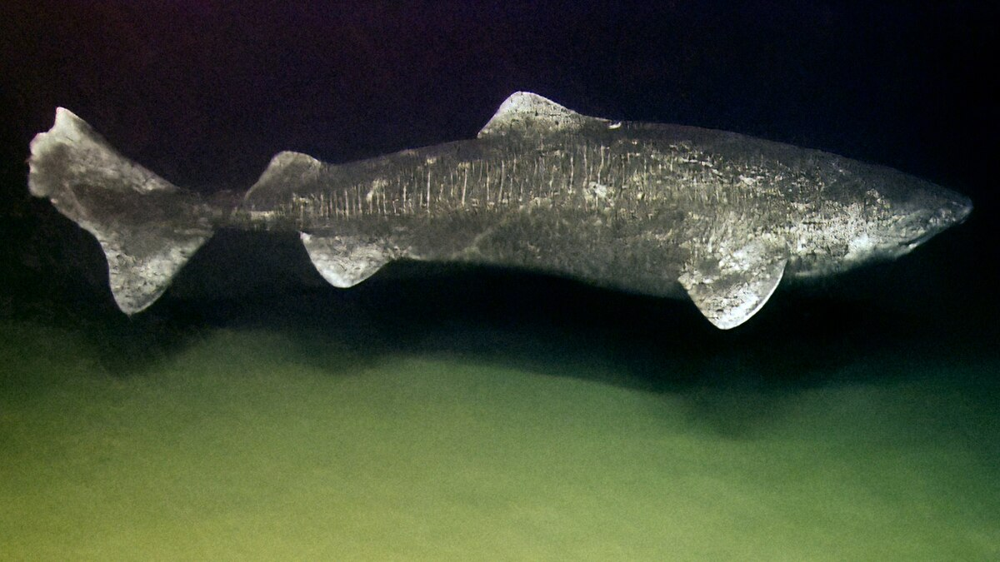
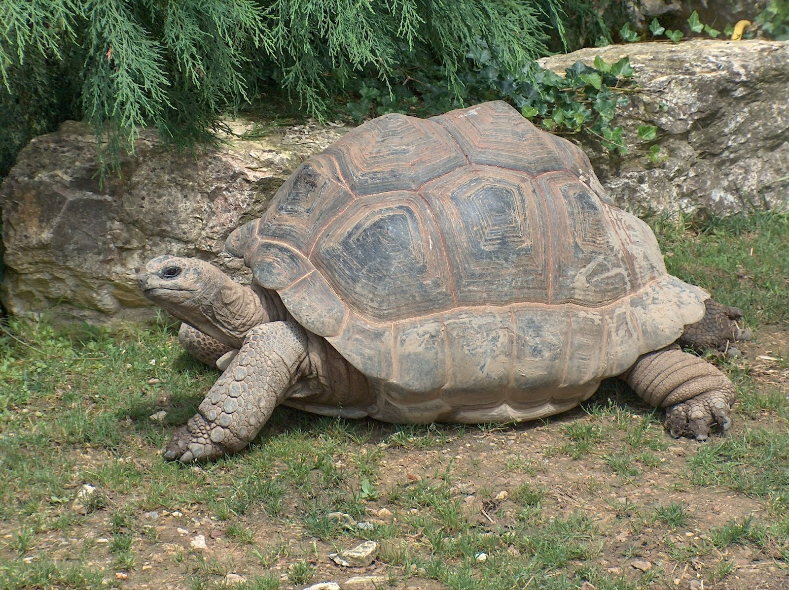
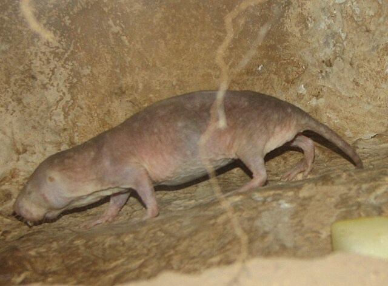
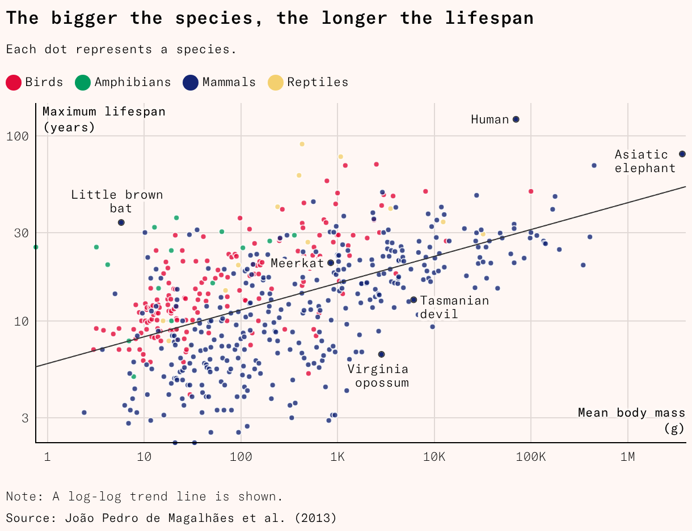
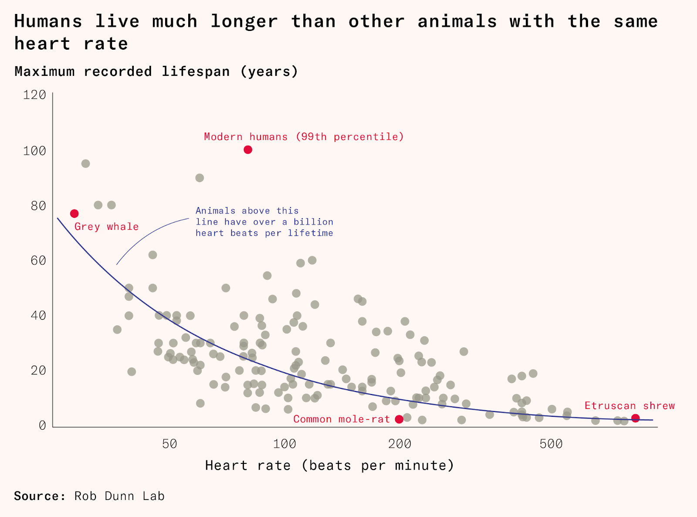
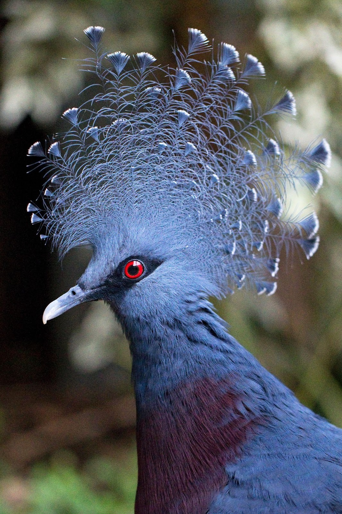
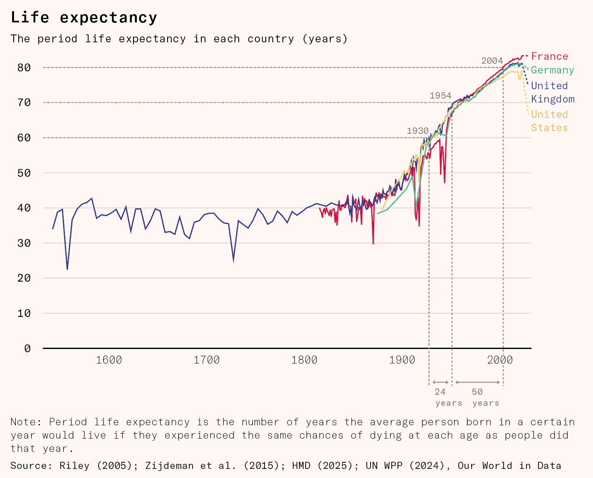

The Turritopsis dohrnii is a small, bell-shaped jellyfish found in temperate and tropical waters. It has stinging tentacles and is completely transparent, allowing you to see its pulsating internal organs. It’s a predator and hunts in the open ocean, feeding on small crustaceans and plankton.

This deep-water, alien-seeming creature has a unique ability to regenerate itself. In cases of extreme stress, like starvation, sudden temperature changes, or even being cut with a pair of scissors, the adult jellyfish can, in a matter of days, transform back into an infant-like polyp stage. The polyp is hardy, and many of its cells are undifferentiated – like in a human embryo – so it can regenerate damaged parts easily and ‘bud’ into several clones.
This process can theoretically happen on an infinite loop, meaning that if the jellyfish managed to escape disease and predation, it could live forever. In a lab, these jellyfish have been kept alive for two years, respawning 11 times. For comparison, the Turritopsis dohrnii’s cousins, the Clytia hemisphaerica or the Obelia geniculata, live as full-grown jellyfish for only a few weeks.
Lobsters are, by all appearances, just insects that live in the ocean. They have segmented bodies, ten legs, and compound eyes. With simple insect-like brains (comprising only 100,000 neurons, to a mouse’s 10 million and a human’s 86 billion), many scientists believe they don’t even feel pain.

Unlike most other insects, they can regenerate lost limbs. This is the result of a group of cells called blastemal cells. Like the cells in a jellyfish’s undifferentiated polyp state, blastemal cells can regenerate into any kind of cell in a lobster’s body, including muscle, bone and nerve cells.
What is remarkable about lobsters is their longevity. They have been known to live for over a hundred years. In most animals, cells, DNA, and tissue accumulate damage over time, which eventually leads to death. Lobsters, on the other hand, repair themselves continually. As a result, their organs, cells, and even DNA stay young.
Lobsters do eventually die. They grow throughout their lives and, as a result, need to regularly molt their shells and regrow them. This process is so energy-intensive that when lobsters get very old, and therefore very large, this molting exhausts and starves them to death. The oldest lobster ever found, dubbed George, was about 140 years old and weighed almost ten kilograms. George was kept on display in a restaurant in New York until PETA campaigned to get him released into the wild, where he almost certainly starved to death. Theoretically, someone could keep a lobster alive indefinitely by feeding it calorie-dense foods when it molts. No one has tried this (yet).
The ocean quahog clam is another long-lived sea creature. Quahog life is the opposite of ‘live fast, die young’. It has a very slow metabolism. Hardly moving, it eats by filtering small particles of food from the water and can survive in a variety of harsh conditions, like very cold water, low oxygen levels, and heavy pollution. It has such a rudimentary nervous system that some vegans will eat it, saying it has no capacity to suffer and is, essentially, more like a plant than an animal.

For the same reason that trees have rings, clams grow ridges in their shells. They grow faster in summer when it’s warm and slower in the winter, producing a new ridge every year. We have found a clam with 507 ridges. Carbon dating verified its age, making it one of the longest-lived animals on Earth.
Clams aren’t the only sea creatures with ultra-slow metabolisms and centuries of life. The Greenland shark is a massive beast. It is about 20 feet long and can weigh up to two tons. Like the quahog, it is a ‘live slow, die old’ kind of animal.

It hunts in the North Atlantic and is a stealthy, opportunistic predator. It remains completely still until an unobservant seal or whale swims past, striking when the perfect moment presents itself.
Such a strategy requires patience but its exceptionally slow metabolism means it needs little food, able to grow large while eating as seldom as once a year. It expends hardly any calories heating itself and can live in such cold waters because high concentrations of urea and trimethylamine oxide stop its blood from freezing. The oldest known Greenland shark is about 400 years old.
On land, the oldest known animal was an Aldabra tortoise named Adwaita. Adwaita was the pet of British general Robert Clive of the East India Company. Clive died in 1774 and, after a few years living on his estate, Adwaita was brought to a zoo in Calcutta, where he lived until 2006. His shell has been carbon dated, showing that he was about 250 when he died. Aldabra tortoises can weigh up to 250 kilograms. They move very little and, like many other long-lived creatures, have slow metabolisms, enabling them to go long periods without eating.

Centuries-long lifespans are found in some mammals, too. Bowhead whales dwarf the Greenland shark, at about 70 tons. They too are cold ocean-dwelling predators with a slow metabolism. We did not know they were so longevous until 2007 when, off the coast of Alaska, hunters discovered the whale they had just killed already had a Victorian-era harpoon embedded in its neck, meaning it must have been at least 120 years old. We now think they can live for over two hundred years.
Bowhead whales superficially resemble Greenland sharks more than they resemble people. But as fellow mammals, they are closer relatives of ours than they are of any cartilaginous fish. They breathe air. They gestate and nurse their young. They are social animals and live in complex communities. They use vocalizations to communicate with one another and have large brains relative to their body size – usually indicative of some degree of intelligence.
Their physical similarities to Greenland sharks suggest they are the product of convergent evolution: cold oceans are, apparently, a good place to be a slow, long-lived, multi-ton predator and thus evolution has answered with several iterations of such a creature.
Naked mole rats are exceptional for mammals in many ways. They live in bee-like colonies with a queen and workers, do not regulate their own temperature, have very slow metabolisms (no surprise), and are immune to some forms of pain, including acidic burns and capsaicin. Like lobsters, they repair their DNA constantly, and they don’t seem to get cancer.

The Gompertz law is a mathematical equation that describes aging. For every mammal, once out of childhood, the odds of dying rise exponentially with age. For example, as an adult human, our odds of dying double every eight years. Among mammals, naked mole rats may be the sole exception. Their odds of dying don’t seem to increase at all. In the wild, they usually live for about 17 years, much longer than a typical rodent of their size, but the oldest known is in captivity: Joe is thriving and pushing 40 with no sign of slowing down.
Homo sapiens are primates characterized by our hairlessness, bipedality, and intelligence. Like naked mole rats, we live in colonies with specialized hierarchical roles. Like Greenland sharks, we are slow and opportunistic predators. And like lobsters, we can regrow lost appendages (albeit only the very tips of our fingers and only as young children). We are strangely long-lived for mammals, both overall and, in particular, for our size. We have long childhoods and, unusually, we live for decades after our reproductive windows have closed. What’s the secret to human longevity?
There are several measures by which humans are strangely long-lived: size, heart rate, and reproductive window. In general, the more intelligent the species, the longer its lifespan. But like all things in evolution, longevity has tradeoffs, and many of the super-long-lived creatures make big sacrifices to achieve their lifespans. Even if we worked out how to harness their gifts, it might not be worth it.
The average lifespan of a species, across all kingdoms of organisms, tends to increase as it gets bigger.

If humans had the lifespan of a random animal their size, we would live between 20 and 50 years. For example, tigers are larger than typical humans, weighing between 100 and 300 kilograms, but in the wild, a tiger will usually live only 10 to 15 years. Even in captivity, which is more like the state humans currently live in, tigers survive just 25 years.
We don’t just have long lives for our size, we also have long lives for our heart rates. Most mammals get about one billion heartbeats in their lifetime. Small animals have fast heart rates and short lives, and larger animals have slow hearts and long existences. Humans are a major outlier here, too: we get more than two billion heartbeats.

What is particularly unusual about humans, as well as a small handful of other strangely long-lived animals, is that we continue to live long after we are no longer able to reproduce. Women go through the menopause at around 50 and stick around for decades more, an adaptation that is possibly the product of our complex social structures and needy children. Elderly humans, chimps, and elephants can help take care of children and store up and pass on useful knowledge to their family and tribe. Tigers, who usually die while still fecund, are of little use to their cubs after a few years: a tiger grandmother with four grandcubs does a disservice to her genes by staying around and competing for resources.
In addition to a long post-reproductive life, humans and other primates have an exceptionally long period of childhood, where we grow and develop while still not having reached sexual maturity.1 Big brains take a long time to develop and can be taught a lot of information. As a result, the number of neurons is a better predictor of lifespan than metabolic rate and body mass.
But while brain size predicts in broad strokes why some animals live longer than others, it doesn’t explain why any of the super-duper long-lived creatures have their powers, except for maybe bowhead whales. Naked mole rats are interchangeable parts of a machine. Lobsters don’t have problem-solving skills or a long-term memory. Jellyfish don’t even have brains. Clams don’t do anything at all!
This is only a partial explanation. It explains the evolutionary conditions that created longer lifespans, but it doesn’t tell us anything about what in our biology gives us these longer lifespans, or what we could do to live longer.
Physiologically, humans have some of the adaptations that super-long-lived creatures have. Our brains use a lot of energy, but instead of having a correspondingly high metabolism, humans are very energy efficient elsewhere. We have small muscles and are, for mammals, basically hairless, which means we can cool ourselves very efficiently by sweating.
We have some of the cancer-fighting adaptations that other large, long-lived animals have, too. We might naively assume that a large, long-lived animal, due to having more cells that are copied more times, would develop more cancers. Instead, smaller animals like mice and rats are much more vulnerable to cancer than humans, elephants, and whales.
This problem is called Peto’s paradox. One theory is that larger animals develop ‘hyper tumors’. Once a cell has turned cancerous, it has defected against the whole organism. Each of its cells is more prone to becoming cancerous again, so the cancerous tissue is overwhelmed and killed by hyper tumors. In a mouse, a two-gram tumor – ten percent of its mass – would kill it, likely before it developed a cancer-fighting hyper tumor. In a human, a two-gram tumor – 0.002 percent of their mass – would have a negligible effect unless it were in a crucial organ. In a bowhead whale, a two-gram tumor would be just 0.000002 percent of its mass.
Another explanation points the finger at large animals’ slow metabolisms. The respiration that takes place in the mitochondria is a big part of our metabolism and, as a byproduct, makes reactive oxygen species that cause cell damage. (This is why ‘antioxidants’ might be good for us. And it is also a reason proposed for why low levels of radiation are unlikely to be harmful: we are doing ourselves DNA damage already, and healing constantly.) A slower metabolism means both fewer cell divisions and less cell damage per cell. But while humans are resistant to cancer for our size, taller humans get more cancer, which suggests that we have a cancer-fighting adaptation that does not just scale with size.2
In humans, about half of cancers have a mutated p53, and the gene plays a crucial role in preventing cancer formation. Elephants have 20 copies of this gene. They also exhibit hyper-apoptosis, which means that cells are killed after modest DNA damage before they can become malignant. This is associated with the LIF6 gene, some variation of which is also possessed by naked mole rats and bowhead whales.
In nature, these benefits come with a cost. In order to extend their lives, the longest-lived species have evolved to sacrifice many things we value greatly. Cancer suppression involves dedicating a lot of scarce energy towards DNA repair and immune defenses, away from reproduction, growth, and fighting. This makes sense for unpredatable animals like elephants that hyper-invest in a small number of offspring but not for a creature that wants to grow and reproduce quickly, use sharp bursts of energy, or develop ornamental appendages.

Humans are nothing like Turritopsis dohrnii jellyfish. We don’t know if these jellyfish retain their memories when they revert to their polyp stage. We’re not sure they even have memories. Many of us would not see the ability to spawn baby clones as a legitimate alternative to a longer lifespan.
Living like a Greenland shark, a clam, or a tortoise doesn’t seem like a good alternative to a human life. If we found ways to stop burning energy and live in extreme cold as they do, we might survive much longer, but it wouldn’t really be living.
But while we may not want to copy their lifestyles, the existence of animals that live so much longer than us makes it worth asking whether there is an underlying secret of aging we can unlock. If nature couldn’t give us longer lifespans, perhaps science could make them.
As life goes on, people become more likely to die, whether through infectious disease, cancer, failure of key organs, a stroke, or a heart attack. That suggests there are two potential ways to increase longevity: tackling the proximate causes of death, like cancer and dementia, as medicine typically does; or finding and tackling some underlying reason that these causes come along more over time. This second approach would mean breaking the link between our ‘chronological clock’ – how long we’ve been alive, and our ‘biological clock’ – the state of our body and brain.
So far, we have been incredibly successful in increasing life expectancy through a ‘whack-a-mole’ method of curing differing ailments. Back of the envelope calculations suggest that making sure a child is properly fed increases their life expectancy, after they have survived to old age, by a further 0.39 years, taking beta blockers after a heart attack by 2.48 years, and cleaning air from high to low pollution by 0.4 years.
But this approach gets harder and harder as we whack the easiest to catch moles. It took 25 years to raise life expectancy from 60 to 70, and then more than 50 years to raise it to 80. As death rates fall, the pool of survivors shifts toward people who are naturally healthier, leaving fewer frail individuals to save. Despite having better technology than ever, further gains have become progressively smaller.

For now, most treatments do not seem to return us to enjoying the life we used to lead. Surviving something like cancer or heart disease usually means living with chronic pain and discomfort, one step closer to future danger.
Is it possible, instead, to slow the biological clock? We know that long-lived animals have different strategies. They have specific adaptations, like cancer-fighting genes, that we may want to emulate. But they also share traits that are generally helpful: lobsters and naked mole rats have very good DNA repair, and basically, every creature with an ultra-long lifespan also has a slow metabolism.
One option is to learn from the lobster. Telomeres, repetitive strings of extra DNA on the end of the main strand, are one of the first things we learn about if we are interested in aging.3 When a cell divides, it replicates most of its DNA. But it does not copy the very ends, so the telomeres become shorter with each division. When the telomeres become critically short, the small chunk of DNA deleted starts to include important information, leading to cellular death, senescence, or cancer. The rate of telomere attrition is highly predictive of a species’s lifespan, and within species that we have tracked, like mice, individuals with longer telomeres live longer and develop less cancer.
There is a naturally occurring enzyme, telomerase, that can repair telomeres by adding the repetitive sequence back onto the end of DNA. It is abundant in the ageless lobster but, in most animals, is active in just a limited number of cells, like gametes, stem cells, and some parts of the immune system. But it could, theoretically, be switched on in other cells with gene editing injections or other therapies.
Unfortunately, when telomerase was switched on in the skin cells of mice, it didn’t simply give them better skin. Instead they had both better healing and more skin cancers. Similarly, switching telomerase on across an entire mouse gave it more cancers everywhere that the telomerase was expressed. But in mice that have been engineered to be more cancer-resistant, more telomerase led to longer lives and to other signs of youthfulness like thicker skin and better performance on motor tests.
If we are unable to generate more useful telomerase and stop telomere shortening, like the lobster, or to improve our DNA repair mechanisms, like in naked mole rats and elephants, then we might consider upgrading our metabolisms. There is clearly some relationship between metabolism and life span. The most popular explanation links aging to the production of reactive oxygen species during normal metabolism. Known as the free radical theory of aging, these chemicals, the inevitable byproducts of the chemical processes that are your metabolism, are highly volatile and damage cells and DNA when they come into contact with them.
The body normally has natural processes that repair this destruction, but over time, the rate of damage increases, and these repair processes get overwhelmed, making people age. Animals like birds and bats that have fast metabolisms and long-ish lifespans have adaptations that lead them to produce fewer reactive oxygen species, especially near their DNA. But many other long-lived species show signs of abundant damage from reactive oxygen species, even while young.
In simple organisms like worms, flies, and yeasts, single-gene mutations that affect the metabolism can dramatically extend lifespan. For example, the worm C. elegans has a receptor that is active when food is plentiful but that can be genetically reprogrammed, orienting the animal towards maintenance and metabolic thrift and away from growth and reproduction. This genetic edit doubles C. elegans lifespan. Dwarf mice with similar mutations live about 50 percent longer than their littermates. We have even found some rare genes that appear to work in similar ways when studying centenarians, especially among Ashkenazi Jews and Italians.
One of the pathways through which these rare genes for longevity change the metabolism is mTOR, which stands for the ‘mechanistic target of rapamycin’. When nutrients are abundant, mTOR promotes cell growth and, when they are scarce, mTOR activity switches cells into maintenance mode. Chronically high mTOR, usually caused by overfeeding, can accelerate aging, and inhibiting the mTOR pathway has been shown to extend lifespan in every organism tested. Fortunately, we do not have to be a gene-edited screwworm or an Italian supercentenarian to benefit from this pathway: some drugs, like rapamycin, likely inhibit mTOR. At high doses, rapamycin is used as an immunosuppressant to stop people from rejecting transplants, but at lower doses, it can prolong lifespan without severe side effects. When mice are treated with rapamycin from their youth, it can extend lifespan by about a quarter. When used in 600-day-old mice, which are at a comparable stage in their lives as a 60-year-old human, it can extend their lifespan by about a tenth.
There are other signs that changing our metabolisms is key to extending our lifespans. There are several drugs on the market that have been shown to promote longevity in mice, all of which were originally developed to treat diabetes: acarbose, SGLT2 inhibitors, metformin, and now GLP-1 agonists (like Ozempic). Diabetes is a chronic health condition that affects how the body turns food into energy, characterized by elevated levels of sugar in the blood due to problems with insulin production or action. Most of these drugs seem to work by decreasing blood sugar and promoting weight loss.
There may be lower-tech diabetes treatments with benefits, too. Intermittent fasting and caloric restriction often increase lifespans in lab experiments on mice, even if it isn’t clear whether intermittent fasting is good because it helps insulin regulation or inflammation, or because it is just a good way to stop obesity.
While aging chronologically may imbue us with wisdom and other benefits, beyond a certain point, getting biologically older has little to recommend it. Neuroplasticity and the ability to learn new languages peak in early childhood. Young people recover faster from injuries. IQ, recall, and speed of processing peak in adolescence. Metabolism peaks at 20. Bone density typically peaks between 25 and 30. Muscle mass typically peaks at age 30 and decreases at about 5 percent per decade following.
Human life would be very different if we, like naked mole rats, could break out of Gompertz’s law, if we could stay as healthy as the average 25-year-old until a car or a pandemic like the Spanish flu killed us.4 Most people die of things caused or exacerbated by age, like heart disease, cancer, infections and dementia, meaning that, especially in the rich world, we could expect to live for hundreds of years. Extremely cautious people could probably live for millennia.
Perhaps if we wait for a few million years, we will fill an ecological niche where our descendants become still and cold-blooded, enjoying centuries-long youths. The alternative will be to pharmaceutically construct what nature didn’t give us: injections that lend us a lobster’s ability to repair and regrow, gene therapies that give us an elephant’s resistance to cancer, drugs that give us a Greenland shark’s metabolism, or – better still – give us a bird’s ability to cure ourselves of metabolic damage. Ideally, we would be able to live tortoise years on dog diets, shark lifespans in tiger climes.
Evolution has tradeoffs. Obviously, none of us would trade places with a clam or a lobster. But we’re no longer constrained to traits that can be coded into DNA and enable a hunter-gatherer to reproduce. In the long run, this means we can change anything we want about ourselves. For now, mortality should be the priority.